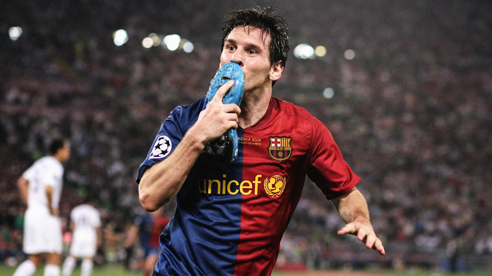

Football is the best sport in the world, i love it because of how many positions you could play in, giving any player a role with the team of 11
some of these positions are
I love Fc Barcelona because of the type of Players and the fans we are. We have had legends play on our team, with the likes of messi, ronaldhinho, ronaldo (R9), thiery henry, maradona and many more. the clubs fans are the most loyal, staying with the club during our downfall where we went trophyless, but we are back.
lionel Messi is the best player of all time, although when i was young i thought that Cristiano Ronaldo was, but I was proved wrong. Ronaldo got me into football but Messi showed me how to play.
Lionel Messi's greatets acheivements include 44 trophies all won throughout Argentina, Spain, Miami and Paris. He has 819 goals and 344 assists and has won the world cup